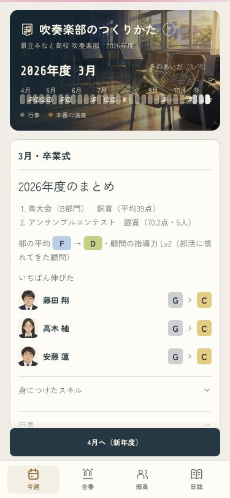
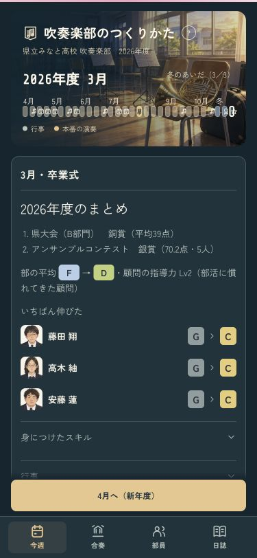
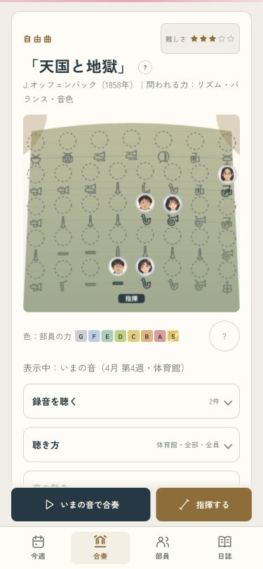
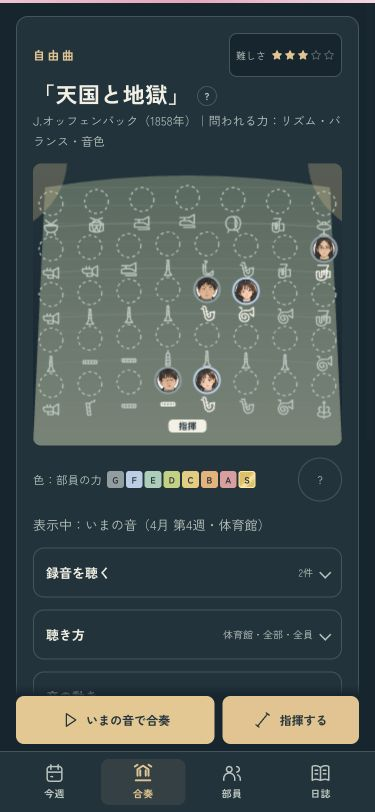

1年の成長を、顔とランクで振り返る
よく伸びた部員を、顔とG〜Sの変化で表示。詳しい記録は開いて確認でき、新年度へ進むボタンは画面下に置きました。画像は表示確認用の見本です。
合奏を聴きながら練習を進めても、停止後は現在の週と譜面へ戻ります。冬の表示も11月・1月・3月へそろえました。3年生がいない年度の案内も学年に合わせています。
年度末・ライト · 年度末・ダーク · 4月から試す · 確認記録
年度末・ライト
年度末・ダーク
停止後は今の週へ
同じ合奏・ダーク